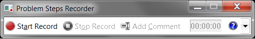

Short memo about a good program

An article at dipanmpatel.com cached version (the site is gone) told me about a useful Windows program.
When you want to show someone how to do something, you can either write a very wordy explanation (hoping that the recepient has patience to read through it), or try to make a lot of screenshots and spice them up with some words.
Windows application called PSR.exe (shipped in Windows 7+) is suited to make your life easier with that.
Aimed at simple users (the tool's name is acronym for Problem Steps Recorder), it is as easy as two buttons:
clicking first button starts recording,
clicking second finishes recording and saves a ZIP file with screenshots and a small textual description of what was clicked.
Pretty useful if you're an IT guy and want to help someone explain you what's wrong. Or if you want to make a tutorial – then it can be a good starting point.